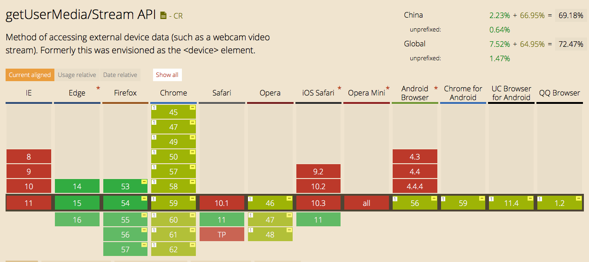

HTML5 访问视频和音频输入设备
API: Navigator.MediaDevices.getUserMedia()
语法：
var promise = navigator.mediaDevices.getUserMedia(constraints);
参数： constraints
可以配置为如下：
navigator.mediaDevices.getUsermedia({video: true, audio: true});
navigator.mediaDevices.getUsermedia({video: {width: 800, height: 480}, audio: true});
navigator.mediaDevices.getUsermedia({audio: true,video: {
width: { min: 1024, ideal: 1280, max: 1920 },
height: { min: 776, ideal: 720, max: 1080 }
}});
// 移动设备
// 前置摄像头
navigator.mediaDevices.getUsermedia({ audio: true, video: { facingMode: "user" } })
// 确认主摄像头
navigator.mediaDevices.getUsermedia({ audio: true, video: { facingMode: { exact: "environment" } } })
// 限制帧数
navigator.mediaDevices.getUsermedia({ video: { frameRate: { ideal: 10, max: 15 } } })
返回值
Promise 对象
-
成功返回为
MediaStream -
失败异常
- AbortError
- NotAllowedError
- NotFoundError
- NotReadableError
- OverConstrainedError
- SecurityError
- TypeError
早期接口为 navigator.getUserMedia()
旧浏览器使用示例：
// Older browsers might not implement mediaDevices at all, so we set an empty object first
if (navigator.mediaDevices === undefined) {
navigator.mediaDevices = {};
}
// Some browsers partially implement mediaDevices. We can't just assign an object
// with getUserMedia as it would overwrite existing properties.
// Here, we will just add the getUserMedia property if it's missing.
if (navigator.mediaDevices.getUserMedia === undefined) {
navigator.mediaDevices.getUserMedia = function (constraints) {
// First get ahold of the legacy getUserMedia, if present
var getUserMedia =
navigator.webkitGetUserMedia || navigator.mozGetUserMedia;
// Some browsers just don't implement it - return a rejected promise with an error
// to keep a consistent interface
if (!getUserMedia) {
return Promise.reject(
new Error('getUserMedia is not implemented in this browser'),
);
}
// Otherwise, wrap the call to the old navigator.getUserMedia with a Promise
return new Promise(function (resolve, reject) {
getUserMedia.call(navigator, constraints, resolve, reject);
});
};
}
navigator.mediaDevices
.getUserMedia({audio: true, video: true})
.then(function (stream) {
var video = document.querySelector('video');
// Older browsers may not have srcObject
if ('srcObject' in video) {
video.srcObject = stream;
} else {
// Avoid using this in new browsers, as it is going away.
video.src = window.URL.createObjectURL(stream);
}
video.onloadedmetadata = function (e) {
video.play();
};
})
.catch(function (err) {
console.log(err.name + ': ' + err.message);
});
兼容情况
